Conjuntos
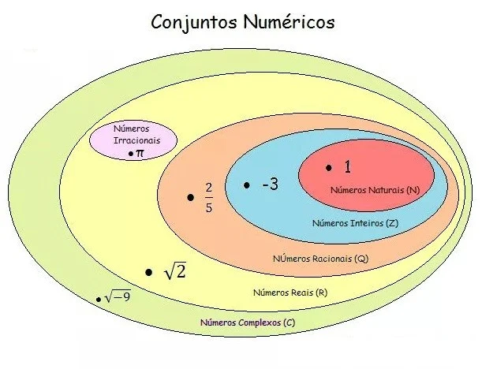
fonte:https://www.google.com/url?sa=i&url=https%3A%2F%2Fcursoenemgratuito.com.br%2Fconjuntos-numericos%2F&psig=AOvVaw2AC848cJeYKGgn-oSaU-a2&ust=1684174747292000&source=images&cd=vfe&ved=0CA4QjRxqFwoTCMiOwIG29f4CFQAAAAAdAAAAABBq
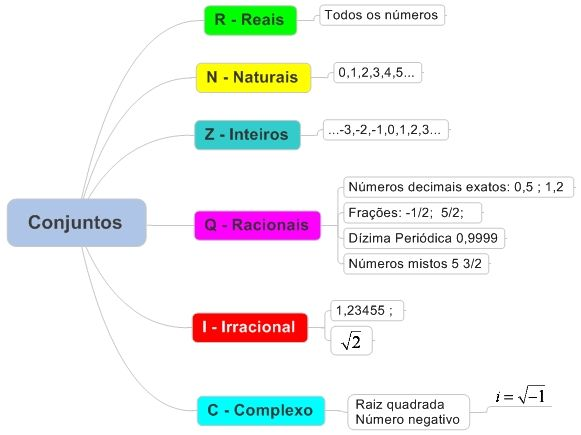
fonte:https://www.google.com/url?sa=i&url=https%3A%2F%2Fprofessordiminoi.com.br%2Fconjuntos-numericos&psig=AOvVaw2AC848cJeYKGgn-oSaU-a2&ust=1684174747292000&source=images&cd=vfe&ved=0CA4QjRxqFwoTCMiOwIG29f4CFQAAAAAdAAAAABBg
Um conjunto é o agrupamento de determinados símbolos, numeros ou letras que tem algum tipo de semelhança.
Os conjuntos podem ser representados de duas formas:
- Conjunto dos numeros postivos ate 10: A = { x | x é positivo e menor que 10 }
- Conjunto dos numeros postivos ate 10:
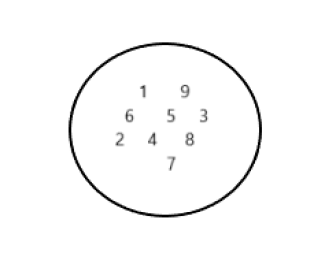
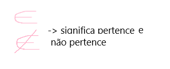
Usamos esse simbolo para dizer que determinada coisa pertence a um conjunto. Por exemplo:
A= { 1,2,3,4,5,6,7,8,9 }, B= { 1,4,5,6 }, então:
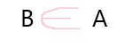
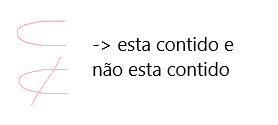
Usamos esse simbolo para dizer que algo está contido em um conjunto. Por exemplo:
X= { 1,5,2 }, Y= { 1,2,3,4,5 }, então:
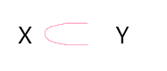
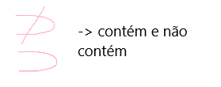
Usamos esse simbolo para dizer que algo contem alguma coisa. Por exemplo:
H= { 2,4,6,8,10 }, J= { 2,6,10 }, então:
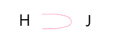
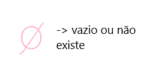
Usamos esse simbolo para dizer que algo é inexistente ou vazio. Por exemplo:
S= { 1,3,5,7,9 }, I= { 2,4,6,8,0 }, então:

Usamos esse simbolo para unir dois conjuntos. Por exemplo:
D= { 1,2,3,4,5 }, C= { 0,6,7,8 }, então:
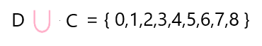
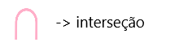
Usamos esse simbolo para mostrar só o que existe em comum entre dois conjuntos. Por exemplo:
L= { 1,2,3,4,5 }, M= { 2,4,6 }, então:
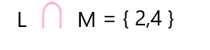
Dízimas periódicas
As dízimas periódicas são números depois de uma vírgula que se repetem infinitamente, frutos de uma divisão não exata.
Para transformar esses números em fração: primeiramente para o numerador voce vai esquecer da virgula, depois vai escrever os numeros que não se repetem e junto vai escrever apenas uma unica vez o numero que se repete. Agora subtraia disso o numero que não se repete. Para encontrar o denominador voce deve observar quantos são os algarismos que se repetem, e vai colocar um "9" a cada algarismo. Depois observe quantos algarismos que não se repetem e estão depois da vírgula, e coloque um "0" a cada algarismo. Se os passos forem seguidos corretamente, a operação acontecerá da seguinte forma:
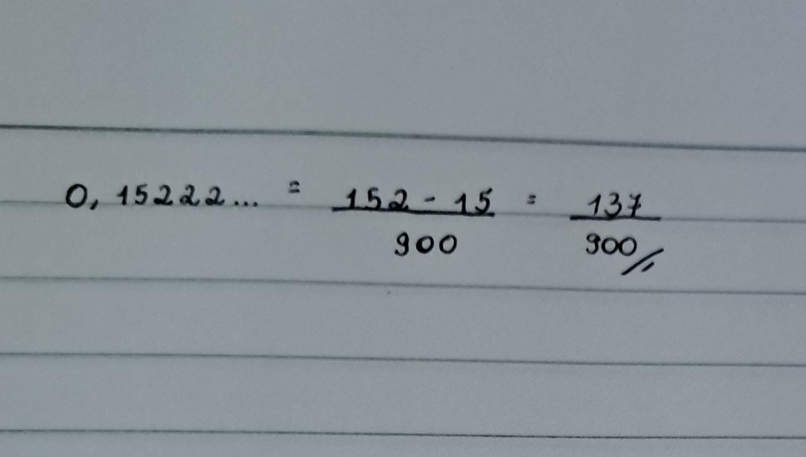
Intervalos reais
Os intervalos reais são representados por uma reta com pontos que determinam quais numeros estão dentro daquele intervalo. Os pontos podem ou não estar incluidos no intervalo, depende deles serem abertos ou fechados.
Um ponto é fechado quando ele é pintado. É representado por [ ]
Um ponto é aberto quando ele tem seu interior transparente. Pode ser representado por ( ) ou ] [.
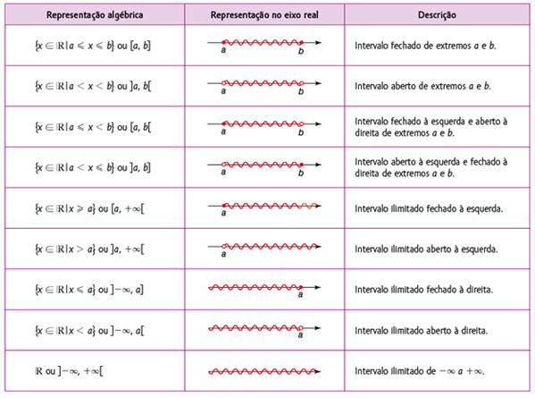
fonte:https://www.google.com/url?sa=i&url=https%3A%2F%2Fpriscillacarvalhoblog.wordpress.com%2F2017%2F04%2F02%2Fintervalos-reais%2F&psig=AOvVaw0IEnihvTYPHbOSjYS_Aksg&ust=1684175590992000&source=images&cd=vfe&ved=0CA4QjRxqFwoTCIDLvJG59f4CFQAAAAAdAAAAABAI
Conclusão matéria:
Meu conteudo favorito até agora foi esse, achei muito facil a parte onde precisa usar simbolos de uniao, interseção... achei bem tranquilo para aprender e acho que a explicaçao foi muito boa. A parte de intervalos reais tambem nao foi dificl, mas me confundo um pouco quando preciso identificar se um intervalo é aberto ou fechado só por meio da funçao, mas ja estou estudando mais sobre isso então nao acho que é ou sera um problema. Tive um problema bem grande com dízimas periódicas, quando a professora estava explicando eu realmente não consegui entender nada, provavelmente porque ela usa um metodo de fraçoes, e eu nao sou boa com essa parte da matematica. Eu ficava perdida por nao saber o que fazer, não sabia quando nem porque multiplicar por 10, quando colocar o 9... Mas chegando em casa, eu procurei bastante sobre esse conteúdo, e descobri um metodo que funcionou muito melhor comigo, um metodo no qual nao precisaria ficar usando muitas fracoes. A partir dali ficou muito mais facil, e hoje em dia é um conteudo em que me garanto e sei que tenho um desempenho bom.